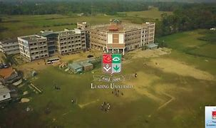
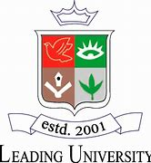
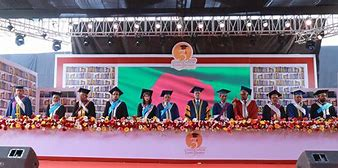

Leading University – a promise to lead
Leading University (Bengali: লিডিং ইউনিভার্সিটি) or LU is a private university of Bangladesh. It was established in 2001 under the Private University Act 1992.[2] The campus of LU is located in Ragib Nagar, Kamal Bazar, South Surma, Sylhet.

Motto: A Promise to Lead Type: Private university Established: 2001 Academic affiliation: UGC Chancellor: Abdul Hamid Vice-Chancellor: Qazi Azizul Mowla Academic staff: 159 Administrative staff: 94 Students: 4,688[1] Undergraduates: 1000 Postgraduates: 531 Location: Sylhet, Bangladesh 24.8697°N 91.8048°ECoordinates: 24.8697°N 91.8048°E Campus: Urban Language: English Colors: Red and green Website: lus.ac.bd
About Us

Departments
Leading University has ten academic departments:[3] -Department of Architecture -Department of Business Administration(BuA) -Department of Civil Engineering (CE) -Department of Computer Science & Engineering (CSE) -Department of Electrical & Electronic Engineering (EEE) -Department of English -Department of Islamic Studies -Department of Law -Department of Public Health -Department of Tourism and Hospitality Management (THM) -Department of Bangla
Programs
The university offers the following undergraduate programs:
Bachelor of Architecture B.A. (Hons) in Bangla BBA (Hons) B.Sc. in Civil Engineering B.Sc. (Hons) in Computer Science & Engineering B.Sc. (Hons) in Electrical & Electronics Engineering B.A. (Hons) in English B.A. (Hons) in Islamic Studies LL.B (Hons) Bachelor of Tourism & Hospitality ManagementLU offers the following postgraduate programs:
MBA (Regular) MBA (Executive) M.A. in English (Preliminary and Final) M.A. in Islamic Studies LL.M Master of Public Health M.Sc. in Computer Science and Engineering